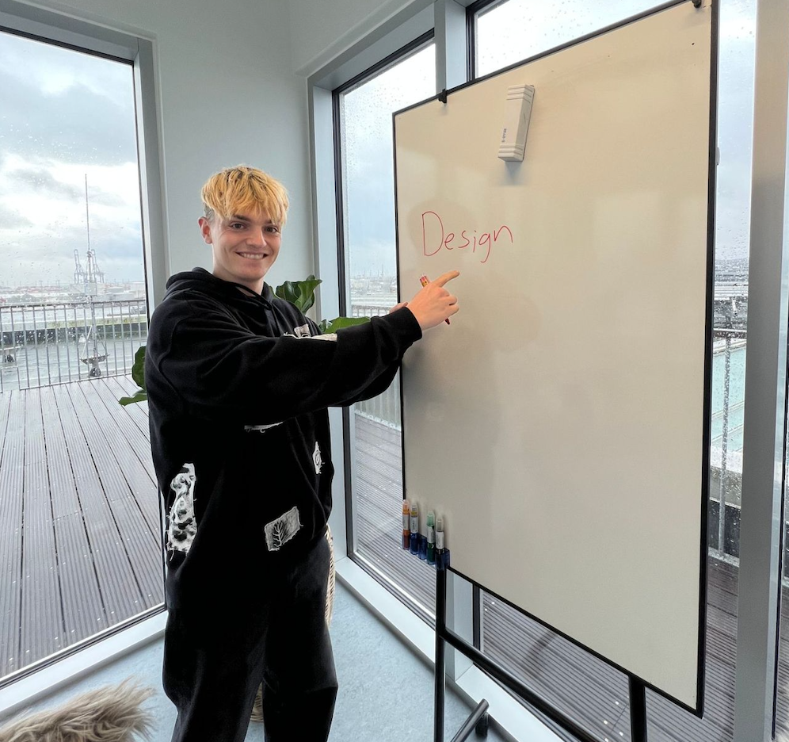
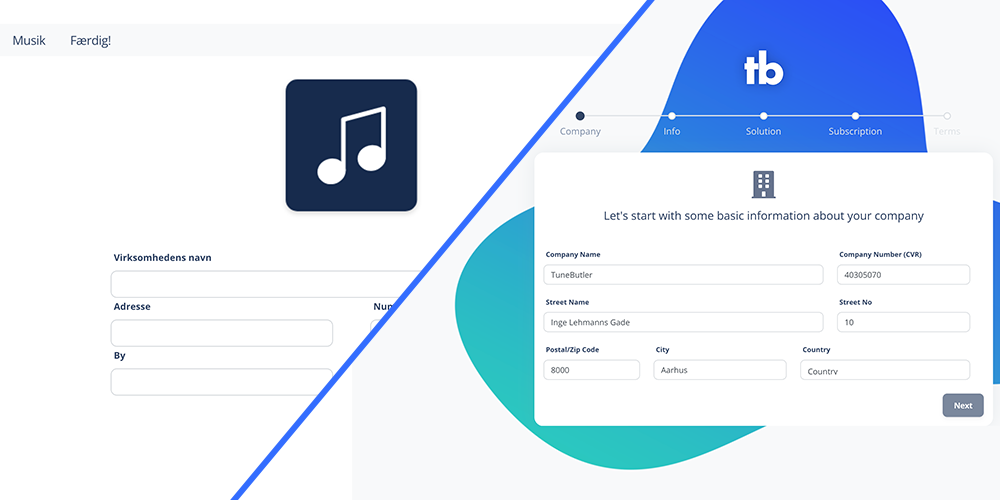
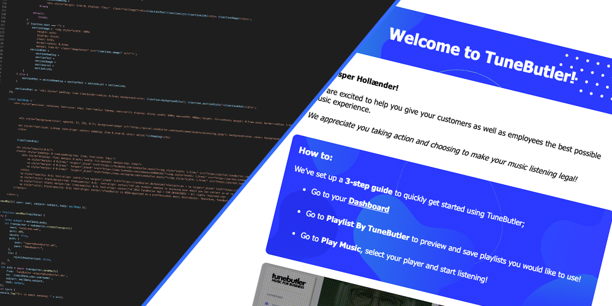
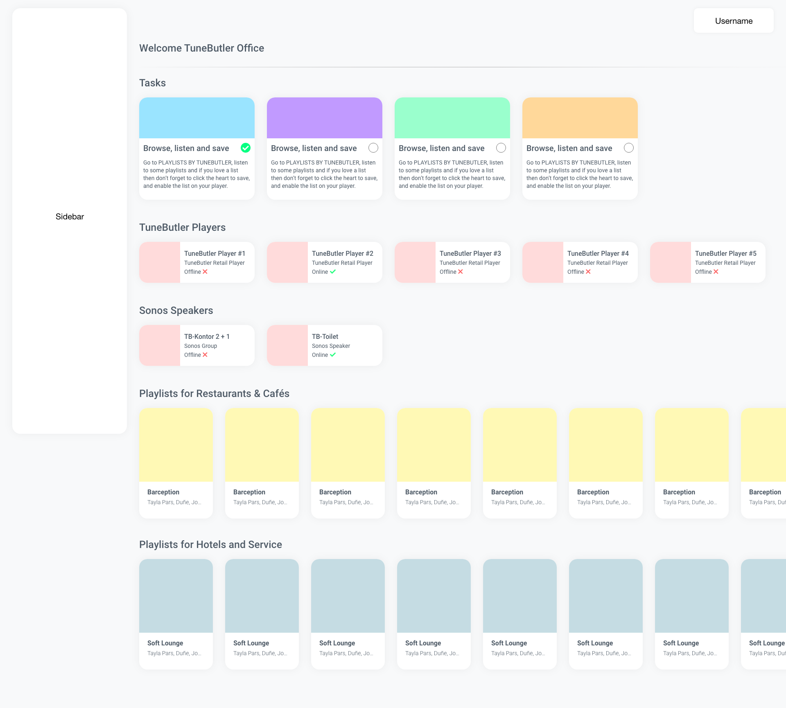
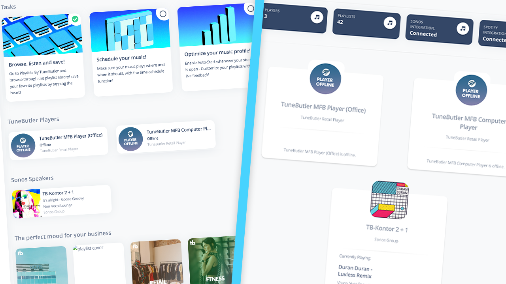
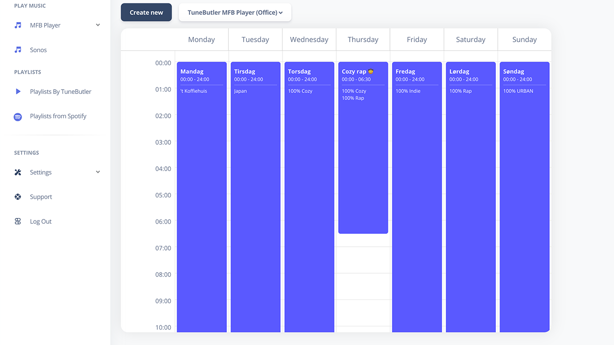
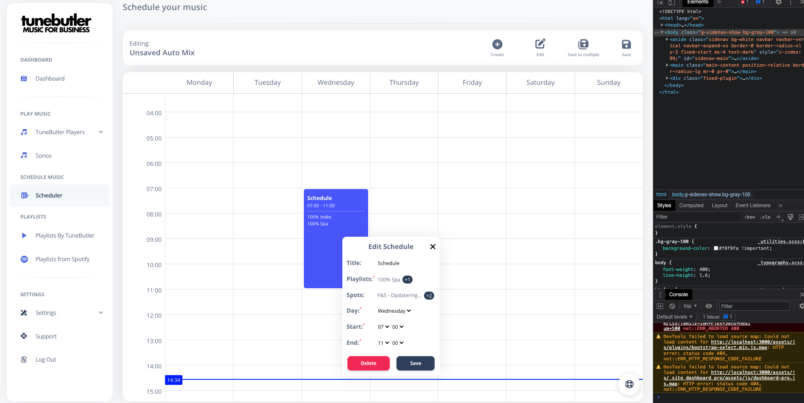
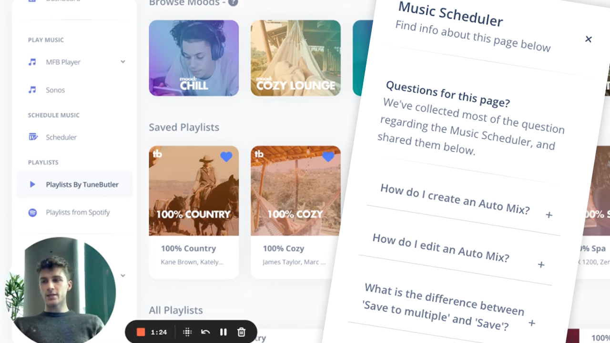

Introduktion
Hej og velkommen til min blog, der har til formål at indsamle og formidle min tanker
og erfaringer, under mit praktikophold hos TuneButler. Vi er et lille team på 6 mand, hvor CEO Kasper
Hollænder og jeg står for programmering og udvikling.
Mine primære arbejdsopgaver hos TuneButler er: Frontend development af TuneButlers
WebApp og hjemmeside, Backend Development af WebApp samt grafisk design af diverse elementer til bbrug i
både frontend og marketing.
Jeg kommer til at udføre dette arbejde ved brug af følgende
programmer/programmeringssprog:
Programmering:
- Visual Studio Code
- HTML
- CSS
- JavaScript
- Handlebars
- Bootstrap
- Node JS
Grafisk design:
- Adobe Photoshop
- Adobe Illustrator
- Adobe After Effects
- Adobe XD
Planlægning:

Denne blog er skrevet og programmeret af
Andreas
Deleuran Holm Nielsen i
forbindelse med 3.
semesters praktikforløb på Multimediedesigneruddannelsen
Uge 1-2
Praktikkens start
Eftersom jeg allerede arbejdede hos TuneButler inden denne praktikperiode, så var mine
forhold ikke meget anderledes. Jeg mødte ind på kontoret til en enkelt af mine kolleger, der sad og
arbejdede med at bygge nye playlister til WebApp'en. Dette skulle vise sig at være normalen her til
start. Min chef, Kasper, er på barsel lige p.t. så derfor er hans tilstedeværelse meget begrænset.
Heldigvis var han dog tilgængelig på telefonen.
Første opgave
Efter at være mødt ind, sagt hej til min kollega og have sat mig til rette, modtog jeg
et opkald fra Kasper. Han ringede for at give mig min første opgave for min praktik. Jeg skulle
færdiggøre det 'SignUp-system' jeg havde arbejdet på inden praktik-start. Til denne opgave skulle jeg
sørge for at al dataen fra tilmeldingsformularen blev formatteret korrekt og sendt til backenden.
Samtidig skulle designet opdateres så det matchede en visuelle identitet vi gerne ville levere.

En del af dette "flow" indebar også afsendelse og håndtering af emails i forbindelse
med tilmeldingen. Disse inkluderede mails fra velkomstemails til password reset-emails. Til dette
byggede jeg et system i backenden, der gjorde brug af NodeMailer, til at lave mails og sende dem afsted.
Systemet bestod af en funktion der, ved hjælp af forskellige parametre, udfyldte en email template med
brugerdefineret styling. Dette var ret udfordrende da jeg aldrig har arbejdet med mails eller NodeMailer
før, men jeg endte med et produkt jeg og Kasper var tilfredse med.

Ugens læring
I løbet af de her første par uger har jeg fået en super start. Jeg har fået snakket og
sparret med mine kolleger, arbejdet på nye projekter og udviklet mine evner som programmør. Jeg glæder
mig allerede til de næste mange uger :)
Uge 3-4
Dashboard
Det først jeg skulle gå igang med, i starten af uge 3, var en opdatering af vores
"Dashboard" på WebApp'en. Den er ved at være godt gammel og passer ikke længere til det look TuneButler
går efter. Jeg startede min process ud med at lave et mockup så jeg nemmest muligt kunne visualisere det
nye design.

Efter jeg fandt det design jeg gerne ville gå med, så gik jeg igang med at programmere
den nye side. Dashboardet skal være en måde for brugerne at få så meget info om all de mest vigtige ting
på den nemmeste måde. Det tog mig lidt under en uge at lave denne side og at få alle funktioner koblet
op på backenden.

Musikplanlægger
Til min næste opgave skulle jeg udvikle frontenden til en feature vi har i WebApp'en;
en måde at planlægge sin musik så der spilles en specifik playliste på et bestemt tidspunkt i løbet af
dagen. På denne måde kan brugerne nemt spille musik der passer til den kundebase de har i løbet af ugen.
Den nuværende løsning er at mine kolleger på kontoret skal oprette en tidsplan for kunden, og dette vil
vi gerne lade kunden gøre selv.
Jeg har selv skulle stå for både backend og frontend i denne opgave hvilket var ret udfordrende da det
er et ret stort projekt. Det tog mig resten af uge 3 samt hele uge 4 at blive færdig med denne.

Ugens læring
Jeg har i løbet af disse to uger skulle arbejde meget med mine kolleger, hovedsageligt
med idégenerering og designudvikling. Jeg har fået en dybere viden omkring avanceret frontend og
backend.
Uge 5-6
Musikplanlægger (Part 2)
Som det jo så tit er med udviklingsarbejde; så er man aldrig helt færdig og der er
altid plads til finpudsning. Jeg har i disse uger arbejdet på højtryk for at gøre musikplanlæggeren
færdig, så den kan bruges af TuneButlers kunder. Dette bestod af en masse testing, bugfixes og litervis
af kaffe ;) Jeg nåede endelig til en færdig version 1.0 af planlæggeren og den blev fredag sendt ud til
kunderne!

FAQ/Hjælpesektion
Som et lille afbræk skulle jeg også arbejde på FAQ/Hjælpesektions-delen for både det
nye dashboard og musikplanlæggeren. Denne opgave bestod af at producere tekst samt video der skal hjælpe
brugeren med at navigere rundt på siderne. Videoerne lavede jeg sammen med Christian som er vores
marketing-mand, han er vant til at skulle lægge ansigt til diverse video- og billedmaterialer ;). Jeg
stod for at planlægge og redigere videoerne, samt sparre med Christian omkring hvad der skulle stå i
teksterne. Optagelser, redigering og tekstskrivning tog et par dage og var et dejligt afbræk fra
musikplanlæggeren, samt en god mulighed for at arbejde tæt sammen med en kollega.

Ugens læring
Jeg har i løbet af disse to uger skulle arbejde meget med især min kollega Christian på
knap så frontend-tunge opgaver, hvilket var et rart skifte da Jeg havde siddet meget intensivt med
musikplanlæggeren i næsten en måned. Jeg er blevet meget mere integreret i TuneButlers backend gannem
mit arbejde med musikplanlæggeren, og Kasper (CEO) vil gerne snart give mig mange flere tunge backend
opgaver hvilket jeg glæder mig til!